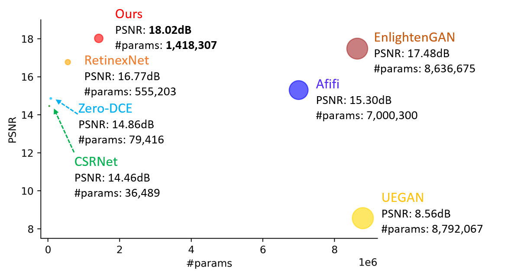

Experimental Results
- Image enhancement on the LOL dataset[1]. Compared with exiting state-of-the-art methods, our method achieves well performance(PSNR on y-axis) with few parameter(x-axis). 
- Qualitative Results
- Demo video


Zero-reference deep learning-based methods for low-light image enhancement sufficiently mitigate the difficulty of paired data collection while keeping the great generalization on various lighting conditions, but color bias and unintended intrinsic noise amplification are still issues that remain unsolved. In this paper, we propose a zero-reference end-to-end two-stage network (Zero-LEINR) for low-light image enhancement with intrinsic noise reduction. In the first stage, we introduce a Color Preservation and Light EnhancementBlock (CPLEB) that consists of a dual branch structure with different constraints to correct the brightness and preserve the correct color tone. In the second stage, Enhanced-NoiseReduction Block (ENRB) is applied to remove the intrinsic noises being enhanced during the first stage. Due to the zero-reference two-stage structure, our method can enhance the low-light image with the correct color tone on unseen datasets and reduce the intrinsic noise at the same time.
Overview of Zero-LEINR. CPLEB preserves the color while correcting the illuminance by combining the results from dual branches. ENRB removes the intrinsic noise enhanced unintendedly through a denoising network trained by two independent noisy pair subsampled from same noisy image. Dotted line indicate the paths used only in training stage.
| CPLEB | ENRB | PSNR/SSIM | |
|---|---|---|---|
| Branch1 | Branch2 | ||
| ✔ | ✘ | ✘ | 16.84/0.54 |
| ✘ | ✔ | ✘ | 9.79/0.39 |
| ✔ Only single branch |
✘ | 9.85/0.40 | |
| ✔ | ✔ | ✘ | 17.02/0.50 |
| ✔ | ✘ | ✔ | 16.97/0.76 |
| ✘ | ✔ | ✔ | 11.01/0.13 |
| ✔ Only single branch |
✔ | 10.23/0.47 | |
| ✔ | ✔ | ✔ | 18.02/0.78 |